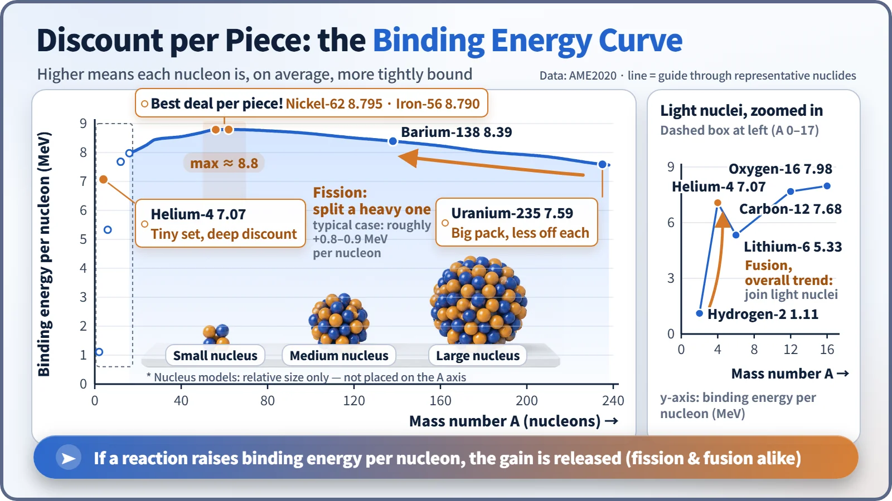
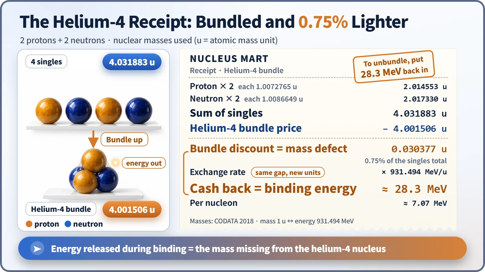

Nuclear & Radiation Basics · 001
The Nucleus Gets a Bulk Discount — Mass Defect and Binding Energy
Bound nucleons always weigh less than the same nucleons apart. The missing mass is the energy that holds the nucleus together.
Weigh the protons and neutrons of a nucleus one by one, then weigh the finished nucleus, and the nucleus always comes out lighter. That shortfall is the mass defect, and the same amount expressed as energy is the binding energy: the energy released when the nucleus formed, and the energy needed to take it apart again. [1]
Four singles, or one multi-pack?
You've seen this deal on a supermarket shelf: one yogurt costs $1.00, but the four-pack is $3.60. Buy four singles and you pay $4.00, so the moment the cups are bundled together, 40 cents simply drops off the bill.
The same shopping math happens inside every atomic nucleus. A nucleus is built from protons and neutrons, which physicists lump together under one name: nucleons. Add up the masses of the nucleons weighed separately, compare that with the mass of the assembled nucleus, and the assembled nucleus is always lighter. The bulk discount is written into the laws of nature.
Where did the missing amount go?
That difference is called the mass defect:
Mass defect = (sum of the separate nucleon masses) − (actual mass of the nucleus)
The mass has not vanished. When the nucleons grab hold of each other through the strong nuclear force, an amount of energy matching that difference leaves as light (gamma rays) or as the kinetic energy of particles. In supermarket terms, the discount didn't evaporate; it was handed out at the register as cash back.
The missing mass, converted into energy, is the binding energy. Flip it around and the logic still holds: to break the multi-pack apart and sell the cups individually again, you have to pay the discount back in full. To pull a nucleus apart into individual nucleons, you must supply exactly that binding energy from outside. [2]
Masses in the atomic world are measured in u (the atomic mass unit, one-twelfth of the mass of a carbon-12 atom), and energies in MeV (one million electronvolts). The two are linked by a fixed exchange rate: a mass of 1 u corresponds to an energy of 931.494 MeV. Multiply a mass difference in u by that number and you have the energy in MeV. [3]
Which pack gives the best deal per item?
A savvy shopper cares less about the total discount than the savings per item. Nuclei are judged the same way. Divide the binding energy by the number of nucleons and you get the binding energy per nucleon: the bigger it is, the more tightly each nucleon is held, on average. Plot it for every nucleus from the lightest to the heaviest and this curve appears.

The curve climbs steeply among the light nuclei, tops out at about 8.8 MeV around mass numbers 56 to 62 (near iron and nickel), and then slopes gently downward. It declines for heavy nuclei because, as a nucleus packs in more protons, their mutual electrical repulsion keeps piling up. [4]
This one curve explains both faces of nuclear energy. Uranium-235 sits at roughly 7.6 MeV per nucleon. When it splits into two medium-sized nuclei at about 8.4 to 8.5 MeV per nucleon (fission), each nucleon becomes roughly 0.8 to 0.9 MeV more tightly bound, and a single fission releases about 200 MeV. When light nuclei such as hydrogen fuse into helium (fusion), they also climb the curve, so energy comes out. The starting points are opposite, but both reactions move toward the peak. [2]
You may have heard that iron is number one. Measured precisely, the winner is nickel-62 (8.795 MeV), with iron-56 (8.790 MeV) a whisker behind. Iron gets the fame because it is the end point of fusion inside stars, so the universe makes an enormous amount of it. [5]
Checking the receipt: one helium-4 bundle
Let's run the real numbers for helium-4, made of 2 protons and 2 neutrons.

| Line | Calculation | Result |
|---|---|---|
| Sum of singles | 1.007276 u × 2 + 1.008665 u × 2 | 4.031883 u |
| Actual helium-4 nucleus | measured | 4.001506 u |
| Mass defect | 4.031883 u − 4.001506 u | 0.030377 u (about 0.75%) |
| Binding energy | 0.030377 × 931.494 MeV | ≈ 28.3 MeV (≈ 7.07 MeV per nucleon) |
A 0.75% discount sounds like pocket change, but in the atomic world it is huge. When wood or coal burns, each carbon atom gives off about 4 eV. Binding a single helium-4 nucleus releases 28.3 million eV, millions of times more. That is why no scale can detect the mass change in a chemical reaction, while the mass change in a nuclear reaction shows up clearly in precise mass measurements. And the point where helium-4 pokes up above its neighbors on the curve is this same 7.07: a seriously good-value bundle. [3]
Three common mix-ups
"Binding energy is energy stored inside the nucleus." It's the opposite. It is energy the nucleus already gave away when it formed. A large binding energy means a tightly bound nucleus that is hard to take apart, not a store of energy waiting to come out.
"A bigger total binding energy means a more stable nucleus." Nuclei of different sizes can't be compared that way. Uranium-238 has a total binding energy of about 1,800 MeV, far more than helium-4, but per nucleon it's only 7.57 MeV, lower than the nuclei near iron. How tightly a nucleus is held is judged by the discount per item.
"Mass disappears." The missing mass simply left as energy. Count mass and energy together and the books balance exactly.
Following reactor heat back to its source
The heat from a nuclear power plant's core is, in the end, the difference left over from this bulk discount. As uranium splits, the binding energy per nucleon rises, and that difference becomes the kinetic energy of the fragments. They heat the fuel, the heat boils water, and the steam spins a turbine. The mass defect is the first ledger that explains why a reactor can run so long on so little fuel.
Key takeaways
Nucleons get lighter when they team up (mass defect), the difference leaves as binding energy, and both fission and fusion release energy whenever they move toward iron and nickel, where the per-item discount is greatest.